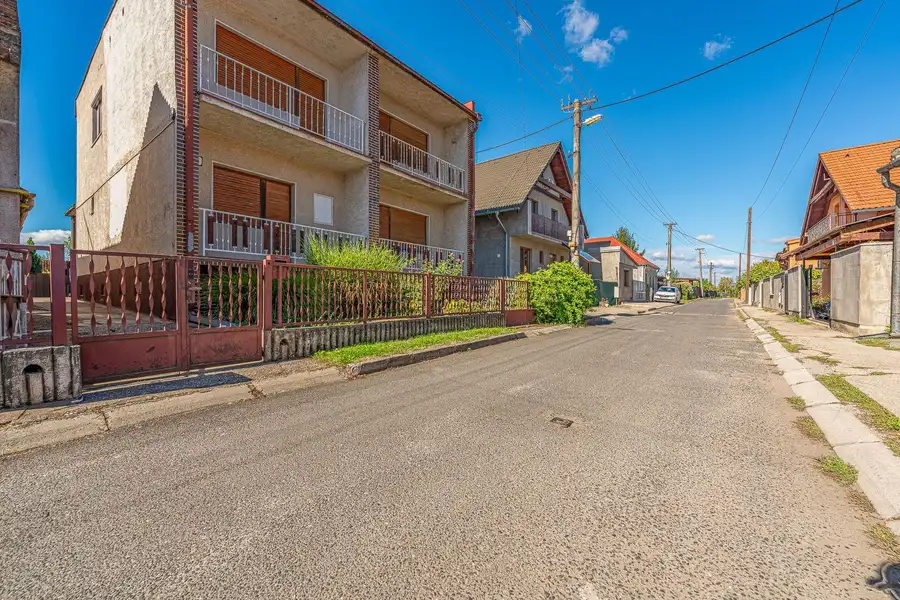
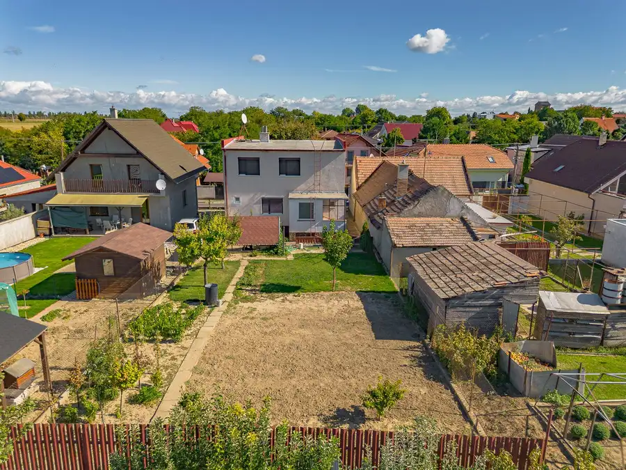
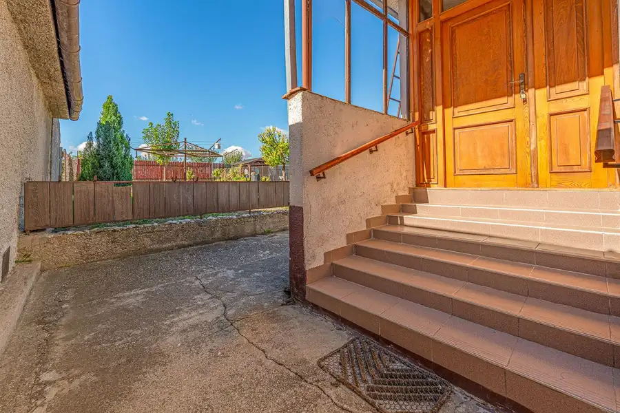
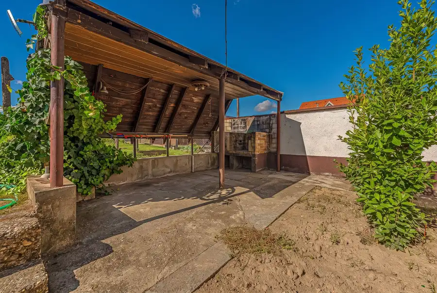
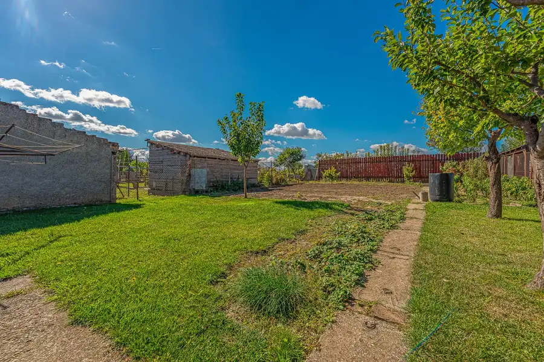
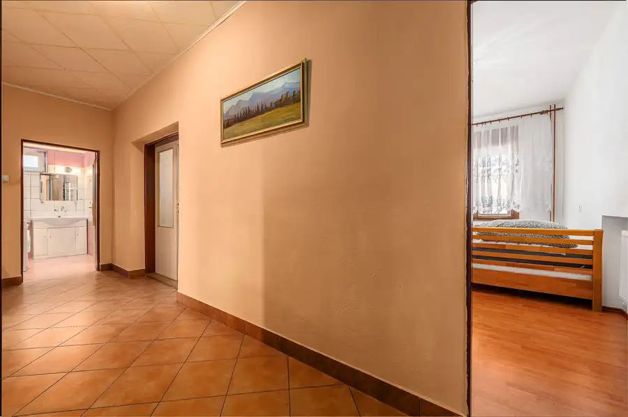
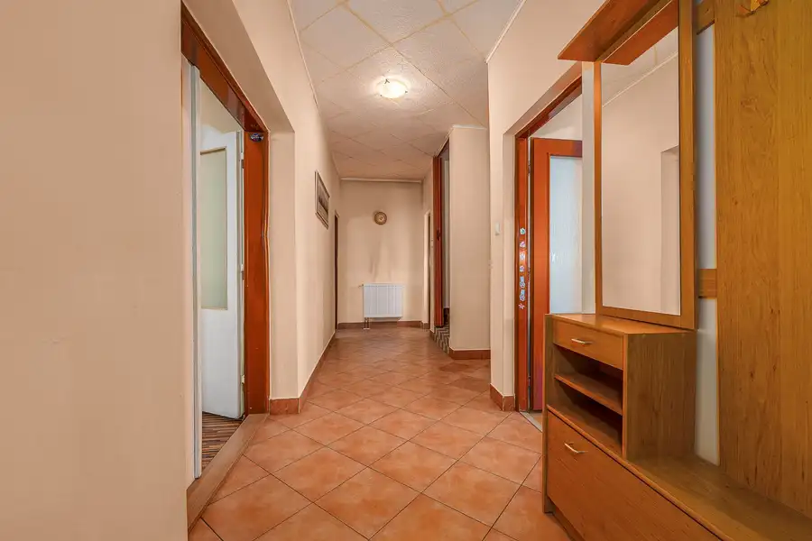

Priestranný, kompletne podpivničený 6-izbový rodinný dom v obci Čataj pripavený na rekonštrukciu
Čataj







- Plocha236 m²
- StavPôvodný stav
- VlastníctvoOsobné
O nehnuteľnosti
6-IZBOVÝ RODINNÝ DOM S GARÁŽOU, PIVNICOU A VEĽKORYSÝM PRIESTOROM V ČATAJIRealitná kancelária MMP Home Vám exkluzívne ponúka na predaj veľkorysý 6-izbový, kompletne podpivničený rodinný dom s celkovou úžitkovou plochou 236 m², situovaný v pokojnej časti obce Čataj na Potočnej ulici.Rodinný dom sa nachádza na rovinatom pozemku s výmerou 489 m² a ponúka nadštandardné množstvo priestoru, ktoré ocení najmä väčšia rodina alebo záujemca, ktorý hľadá nehnuteľnosť s dostatkom úložných a úžitkových priestorov.Dom je v pôvodnom, zachovalom a obývateľnom stave, pričom na nehnuteľnosti bola vykonaná čiastočná rekonštrukcia. Nový majiteľ tak má možnosť dom postupne modernizovať podľa vlastných predstáv, prípadne pristúpiť ku komplexnej rekonštrukcii ihneď.DISPOZÍCIA:1. podzemné podlažie:sklad / kuchynkasklad / vínna pivničkagaráž1. nadzemné podlažie:predsieňobývacia izbaspálňakuchyňakúpeľňasamostatná toaletašpajzasklad2x lodžia2. nadzemné podlažie:4 samostatné izbykúpeľňa s toaletou2x lodžiaHLAVNÉ BENEFITY NEHNUTEĽNOSTI:6 izieb a veľkorysý priestor pre celú rodinuúžitková plocha 236 m²kompletne podpivničený domgaráž priamo v domevínna pivnička a viacero skladových priestorovrovinatý pozemok 489 m²pokojná časť obcemožnosť rekonštrukcie podľa vlastných predstávvhodné aj pre viacčlennú rodinu alebo záujemcu, ktorý potrebuje veľké množstvo úložného a úžitkového priestoruLOKALITA – ČATAJ:Čataj je pokojná obec v okrese Senec, situovaná v príjemnom vidieckom prostredí Podunajskej nížiny. Ponúka pokojné rodinné bývanie mimo ruchu mesta, pričom zároveň disponuje dobrou dostupnosťou do Senca, Bratislavy aj Trnavy.V obci sa nachádza základná občianska vybavenosť vrátane materskej a základnej školy, potravín, pošty, obecného úradu a kultúrneho a športového zázemia.Výhodou lokality je aj dobrá dopravná dostupnosť. Čataj má napojenie na cestnú sieť smerom na Senec a okolité obce, pričom v dostupnej vzdialenosti sa nachádza diaľnica D1, ktorá zabezpečuje pohodlné spojenie smerom na Bratislavu a Trnavu. K dispozícii je tiež autobusové spojenie so Sencom.Okolie obce ponúka množstvo možností na prechádzky, cykloturistiku a aktívne trávenie voľného času. Neďaleký Senec zároveň poskytuje širšiu ponuku obchodov, služieb, zdravotnej starostlivosti, škôl a ďalšej občianskej vybavenosti.Čataj tak predstavuje zaujímavú voľbu pre tých, ktorí hľadajú pokojné a priestranné rodinné bývanie v príjemnom vidieckom prostredí, no zároveň chcú zostať v dobrej dostupnosti Bratislavy, Senca a Trnavy.Celková cena domu je 240 000 €. V uvedenej cene bytu je zahrnutá odmena pre sprostredkovateľa za kompletný právny servis, návrh na vklad, protokolárne odovzdanie nehnuteľnosti, ako aj asistencia pri prehlasovaní energií.Možnosť kúpy aj na hypotekárny úver, s ktorým Vám ochotne a profesionálne pomôžeme.Zodpovedný maklér: Mgr. Miroslav Forro, +421903200913, email: forro@mmphome.skFotodokumentácia a text sú majetkom a autorským dielom spoločnosti MMP Home s. r. o. Copyright.
Parametre
- Doprava
- Diaľnica, Cesta, Diaľkový autobus, Cyklistická infraštruktúra
- Druh
- Rodinný dom
- Dátum zverejnenia
- 28. 09. 2026
- Energetický certifikát budovy
- nie je
- Plocha pozemku
- 0 m²
- Podpivničenie
- Úplné
- Počet garáží
- 1
- Počet izieb / miestností
- 6
- Počet kúpeľní
- 2
- Počet nadzemných podlaží
- 2
- Počet podzemných podlaží
- 1
- Počet spální
- 5
- Prístupová komunikácia
- Asfaltová
- Rok výstavby
- 1979
- Stav nehnuteľnosti
- Pôvodný stav
- Terén pozemku
- Rovinatý
- Typ
- Predaj
- Typ konštrukcie
- Zmiešaná
- Vlastníctvo
- Osobné
- Vybavenie
- Garáž, Záhrada, Altánok / posedenie
- Vybavenie objektu
- Štandardné
- Vykurovanie
- Lokálne
- Zariadenie
- Čiastočne zariadené
- Zastavaná plocha
- 122 m²
- Úžitková plocha
- 236 m²